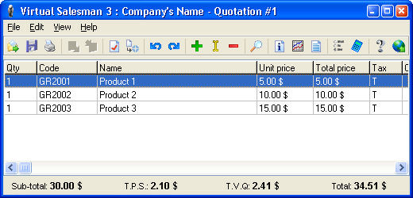

for more information, visit my website http://www.marcandre.info
or write to me at marc@marcandre.info
Copyright ©1998-2005 Marc-andré Lamothe.
The Virtual Salesman is a new generation of selling software destined to small and medium bussinesses and independant workers. It was designed to allow you to easily manage inventories and invoices, so it does not allow you to do any accounting. This specialisation makes it is very fast, versatile and simple to use.
It allows you to easily manage inventories, employees, clients and suppliers lists. And it is possibile to create and manage more than one company with the same software. It is the best alternative to writing your invoice by hand or using Spreadsheets like Excel since it allows the automatisation of selling procedures and inventory management and, with the web module, you can use your inventories online, allowing you clients to directly have access to your most recent products and prices.
Virtual Salesman is the fruit of over 6 years of hard work and research. It started as a replacement to a webpage wich allowed people to created quotations online to buy a computer. Programmed in C++ the first version didn't offer much more than the original webpage. Later on when version 2.0 came out it offered dynamic lists and new fonctionnalities making it alot more efficient. On January 2000 started the work on the 3.0 version, wich was going to be the first totaly polyvalent and flexible version.
For the 3.0 version the entire code was re-written from scratch and the application was completely re-designed, but when it was almost completed some problems occured with C++ memory allocation, causing the program to crash and i decided to change for the pascal language with Borland Delphi instead of Borland C++ Builder 5.0. Everything had to be re-written again but without any problem this time and the version 3.0 came out June 3, 2003.
Until then the Virtual Salesman always was in two modules, a management module and a selling module, but with version 3.0 arrised problems with data consistency because the selling module needed to modify the inventory and clients list to allow to add new clients and substact sold quantities from inventory, and problems would arise if both modules would read/write data in the same file at the same time one of the modules would loose the written data. For that reason in May 2004 it was decided that the version 3.1.1 would be composed of only one program instead of two.
The Virtual Salesman fully integrates the management of all of your company's information, like the maintain of employees, clients, and suppliers list aswell as the creation of inventories and transactions
This is the main window of the Virtual Salesman :
It's user interface is very simple and easy to use, simply select one of the 5 tabs (Inventories, Employees, Clients, Suppliers or Transactions) to instantly view all of your company's information in that section.
After selecting a page, the Print, Undo, Redo, Add, Edit, Delete and Find functions will only apply to the selected list but the others (like Open and Save) are global. You can modify the contained data by clicking on the Add, Edit or Delete buttons of the toolbar to add edit or remove items in the list. It is also possible to modify an existing item simply by double clicking on it. All of those functions can also be acessed in the "File" or "Edit" menu.
The Company function (on the toolbar or the View menu) allows you to access your company specific information :
You can edit the company's information (name, address, telephone, ect.) and it's logo. You can also edit the company's local values (tax rates, currency, deposit, etc.) in the Configuration page and the messages that will be displayed when printing transactions (quotations, orders or invoices) in the Messages page.
When you Add or Edit an inventory in the main view, the window will changes to the inventory display mode :
You can then modify the content of that inventory but you cannot access the previous sections until you close the inventory. An inventory contains a list of groups, and each group contains a list of products. By selecting a group from the list on the left, its products will appear on the right.
In the list, the Taxed collumn shows if taxes are applied to that product when they are sold. Each product also has an URL value wich you can use to store an http address wich will be used by the Web module when displaying that product on a web page.
In the inventory mode, the Close function becomes availlable (on the toolbar or in the File menu) to allow you to close the inventory and return to the company display mode.When you add or edit a Transaction in the main view, the window will change to the transaction display mode :
Unlike inventories, an operation doesn't have any groups but only a list of the products that are sold. The quantity shown here is the one that is sold, and not the one in stock (in the inventory). When you add a product to the list you can choose to add it has Text Only, this product will be added like others but the price will not appear and will not be added to the total of the transaction. You can also write comments for each products, wich will show below the product when the transaction is printed.
In the transaction mode, the Properties function becomes availlable (on the toolbar or in the File menu) to allow you to specify the transaction's specific properties :
You can then select the type of the operation (quotation, order or invoice). The transaction's number will be automaticly calculated and will appear in the field below. If this transaction was already saved before has a different type then the number of the previous transaction type will also appear (ex.: when you create a quotation and a few days later you change it to an invoice, the quotation number will appear in the invoice). You can only change the transaction's type to a higher type, you can change a quote to an order or an invoice but you cannot do the opposite.
When saving an new invoice, a confirmation will appear and if you agree then the quantity of each of the product sold will be removed from the quantity of that product in the inventory. Also you cannot modify a saved invoiced, unless you enable the options in the company configuration page, so make sure that the invoice is correct before saving it. It is also mandatory to save an invoice before you are allowed to print it.
The Report function (on the toolbar or in the View menu) allows you to generate reports on your company's transactions:
A report is in fact a summary of the transaction's values like totals, clients and products sold. Simply choose the report type and a period (you can also manually enter the dates) and click on the Generate button and the information will display in the list bellow. Then you can print the report by clicking on the Print button. Once your are done you can click on Close.
The web module of the Virtual Salesman is a CGI program that can be runned on web site to display the content of an inventory in a web page by adding new special HTML tags to your web page. To use this module it is important to have basic knowledge of the HTML language.
CGI means Common Gateway Interface, so basicly a CGI program is a program that serves has a link between the data and the user. The CGI software or script is executed by an HTTP server and the result, wich is the html code of a web page, is sent to the end user's browser. The CGI program can then change the content of the web page it will returns by adding or removing informations, this is called a dynamic web page.
The web module will display information from your inventory on a web page. The way it works is simple, you create a web page in wich you include special HTML tags that, when the page is displayed, will be read by web module and replaced with the requested information from the inventory. Each tags represent a specific information from the inventory (product name, price, quantity, group name, etc.) Once the page is completed, you will need a running HTTP server to execute the CGI program from your browser, you must type in the address field of your browse the name of the web module on the server with the desired web page as a parameter, then the module will execute on the server, replace the special tags in the web page with the requested information and send the page to your browser to be displayed. See the Executing section below for more details.
A web page that was created with the special HTML tags for the web module is called a template, since without the web module, the page itself is not complete and will not display correctly.
Here is the list of special tags you can use with the web module :
<Inventory>
This is the most important tag of all. It allows the web module to open the specified inventory. Before any information can be displayed from an inventory, it must first be opened with this tag. The web module can only open one inventory at a time, if another inventory is opened, the previous one will be closed. This tag can also be used to display information about the inventory itself, then you do not have to include the Name attribute if you opened the inventory earlier.
Attributes :
</Inventory>
This tag closes the opened inventory.
<Group>
This tag shows information about a group of the inventory.
Attributes :
<Product>
This tag shows information about a specific product from the inventory.
Attributes :
<Table>
This tag is not new to the HTML language, but new attributes allows you to display the content of an entire inventory or group. Only use this tag alone with the new attributes (do not include any TH, TR, TD, ou /TABLE), the web module will automaticly add the lines and collumn for this table. You can still include standard TABLE attributes to modify the table's appearance.
Attributes :
You can take a look at the source code of the exemple-en.html file in your "Virtual Salesman\Web" folder to see what a template looks like. That exemple can also be executed with the provided "exemple.v3i" inventory. Simply follow the steps of the Executing section below to display that inventory with the web module on an http server.
To use the web module you need to have access to an http server or host that will allow you to run binary CGI programs, then you simply have to copy the "VS3.cgi" file in the CGI folder of your server or host (normally called cgi-bin) along with your inventories and templates, it is recommended to create a sub-directory for the templates and inventories. Then on your web browser (Internet Explorer) type in the address of your server or host followed by the name of the CGI folder, then add the file name of the web module (VS3.cgi) and then the name of your template has a parameter (ex.: http://www.mywebhost.com/cgi-bin/VS3.cgi?templates/webexemple.html). If the specified template cannot be found by the module an error message with displayed. Note that inside the templates, the path to the inventory file is relative to the module's root folder, not the template's. If an inventory cannot be found an error message will be also displayed.
The web module can receive parameters with both the Get and Post method, Post is recommended because the name of the template file does not show up in the address. Depending on your server or host the root folder for the web module may vary, you should then contact your network administrator to know from wich folder will the web module look for external files. On some servers it looks at the server root, so "VV3.cgi?webexemple.html" will look for webexemple.html in the root folder of the server, even if the module itself is located inside a cgi-bin folder (on Apache server it looks inside the cgi-bin folder).
The Virtual Salesman stores all of your company information in a single folder, inside it are all the files containing informations on your company, inventories and transactions. When creating a new company you will have to specify the name of that folder.It is very easy to make backup copies of your company data, simply copy this folder on a floppy disk or compress it with programs like WinZip.
All the Virtual Salesman files used to store your company information are encrypted on 32bit with multiple keys. This prevents the files from being accessed or modified by any other software and makes your company's data completely secured.
For any question, comment or extra information, don't hesitate to contact me by email at marc@marcandre.info.
Thanks for using the Virtual Salesman 3.